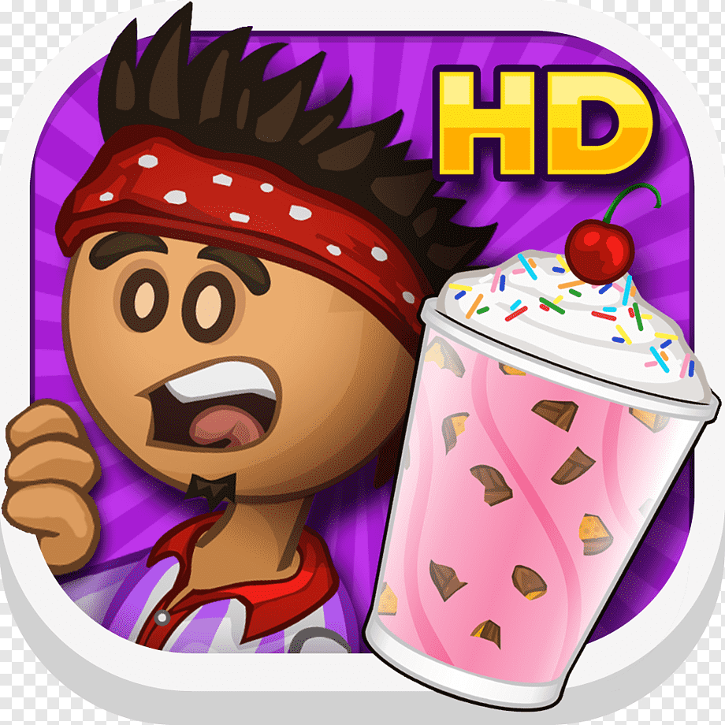

Roblox
Roblox é uma plataforma de jogos em mundo aberto, multiplataforma e simulação que permite criar do zero seu próprio mundo virtual chamado de 'experiência' ou 'place' onde os milhares de jogadores da plataforma podem interagir sobre.
PK XD
PK XD é um jogo que tem um mundo aberto inteiro para explorar com seu personagem, que você pode criar da maneira que quiser. Dá para criar a sua casa e jogar com outras pessoas online, em um ambiente bastante seguro e divertido.
THE SIMS
O game funciona em tempo real, ou seja, possui um modo 24 horas com sistema de dia e noite, no qual as ações dos Sims podem durar de minutos a horas. Se quiser, você pode acelerar suas atividades, mas deverá usar pontos.
stumbleguys
O Stumble Guys é um jogo de corrida, então o objetivo é chegar à meta antes dos outros jogadores. Para isso, você deve saltar, desviar e correr por toda a pista.
papa louie
Papa's Louie é uma extensa franquia de jogos de administrar restaurantes e lanchonetes. Com um visual cartunesco, o objetivo do jogador é ser o chef mais famoso do mundo.
Hay Day

HayDay desafia os jogadores a cultivarem vegetais, criar animais e cumprir missões vendendo itens.
Minicreft
Minecraft é um jogo em que você constrói coisas com blocos, em um mundo virtual aberto e livre para explorar.
GTA
O objetivo do GTA Online é fazer o que for preciso para conseguir mais dinheiro no banco e acumular bens como carros e imóveis.
LOL
League of Legends é um jogo de estratégia em que duas equipes de cinco poderosos Campeões se enfrentam para destruir a base uma da outra.